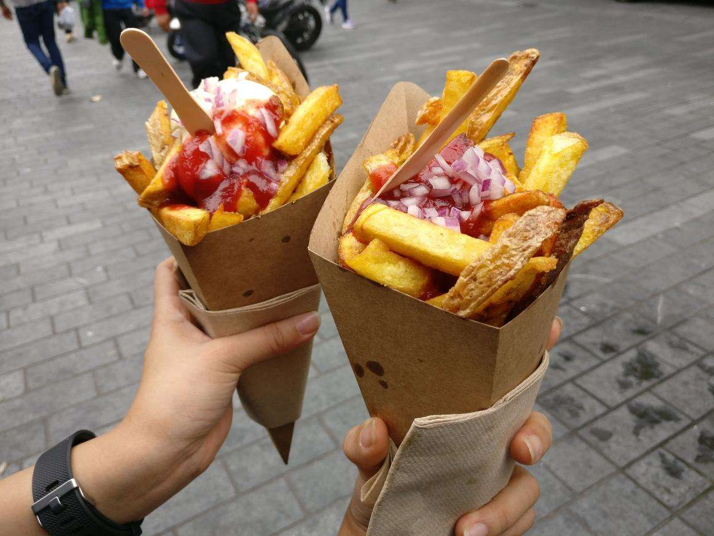

Wander around and find warmth like home in Amsterdam
Amsterdam Updates
-

Chill and Explore -

Corona Virus Updates -

Amsterdam Activity
Tourism Destination
-

Rijksmuseum The Rijksmuseum is the national museum of the Netherlands. We tell the story of 800 years of Dutch history, from 1200 to now. -
Delft City Hall a Renaissance style building on the Markt across from the Nieuwe Kerk. It is the seat of the city's government. -
Zaanse Schans beautiful, unique and full of windmills, handicraft shops and museums
Satisfy your food cravings with Amsterdam culinary delights
Friet
Whether they're called frites, Dutch fries, patat, friet or vlaamse frites, not all fries are created equal.
Read more...

Stroopwafel
Stroopwafels originated in Gouda between the 18th and 19th centuries. Legend has it bakers would, to avoid wastage, mix up leftover cookie crumbs into a dough.
Read more...About
This page is only for Ashar's portfolio purpose. everythings contained here is not mine. it own to their respected owner.